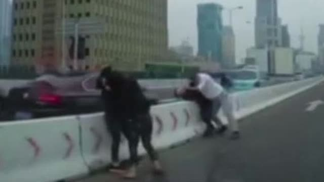

回复@等风来zc:这届北京基民不行。//@等风来zc:支付宝显示今年基金收益率1.93%，竟然超过92.4%的北京基民@ETF拯救世界:今天两市交易的3200只股票中，跑赢50的510只，占比16%。跑赢红利的920只，占比29%。
哪能港，浓眉大眼的上海人也打架？@澎湃新闻:【上海公布高架捉对厮打男女处罚：一男子拘十日另一男子拘五日】 澎湃新闻的秒拍视频 5月7日11时10分许，上海警方接报警称，延安路高架西向东方向近西藏南路下匝道处有两辆小客车停于道路中间，随车人员（共4人）互相扭打。接报后，民警迅速到场将4人带回调查。目前，违法人员顾某（男、红色小客车驾驶员）因寻衅滋事被警方依法行政拘留10日并处罚款1000元，因在城市快速道路上违法停车被处以罚款200元，记6分的行政处罚。违法人员陶某（男、银灰色小客车驾驶员）因殴打他人被警方依法行政拘留5日并处罚款500元，因在城市快速道路上违法停车被处以罚款200元，记6分的行政处罚。违法人员红车随车人员陈某（女）、银灰色车随车人员符某（女）因殴打他人均被警方依法行政罚款500元。上海公布高架捉对厮打男女处罚：一男子拘十日另一男子拘五日 118万次播放 01:49
回复@我有大头:我现在绝对不会买。我买东西不是因为有了或者有钱，而是因为值得买。再说一次。//@我有大头:印度基金E大有没有考虑//@ETF拯救世界:回复@CZ梦想:是的。在沪深300再涨15%才能新高的情况下，我们还差2%。没什么，新高是计划的常态。//@CZ梦想:整体又快新高了，@ETF拯救世界@ETF拯救世界:养老还差3%新高，废柴。